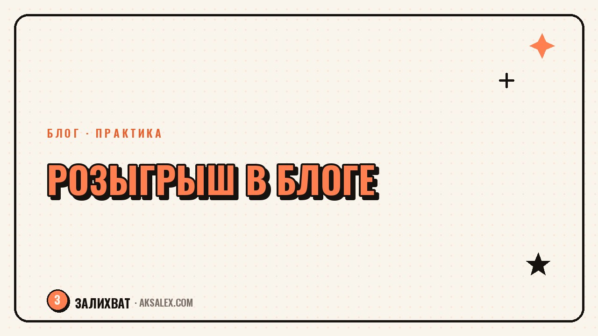

Как провести розыгрыш в блоге: правила и нейросети

Розыгрыш - один из немногих форматов, который почти всегда даёт всплеск охватов и подписок, но только если провести его аккуратно. Небрежно оформленный конкурс превращается в скандал: подписчики обвиняют в накрутке, победителя выбрали непрозрачно, а правила никто толком не прочитал. Разберём, как собрать розыгрыш так, чтобы он работал на доверие к блогу, а не против него, и где в этом может помочь нейросеть.
Зачем блогу розыгрыш и когда он не нужен
Розыгрыш хорошо работает для роста охватов, тестирования новой площадки или оживления блога после паузы. Люди охотнее делятся постом и подписываются, когда есть понятный и привлекательный приз, а не абстрактная просьба поддержать канал.
Но розыгрыш не решает проблему контента самого блога: если посты и ролики не держат внимание, подписчики, пришедшие за призом, отписываются сразу после итогов. Конкурс логично проводить как усиление работающего контента, а не как попытку компенсировать его отсутствие.
Когда розыгрыш уместен
- Запуск блога на новой площадке, где нужен стартовый охват
- Юбилей блога или круглая цифра подписчиков
- Анонс нового продукта или рубрики, которую хочется показать широкой аудитории
- Оживление блога после долгого молчания, если контент уже возобновлён
Правила, которые защищают тебя и участников
Правила розыгрыша - не формальность для галочки, а документ, который защищает тебя от споров и жалоб на площадку. В них нужно чётко прописать сроки, условия участия, способ выбора победителя и то, кто оплачивает доставку приза.
Что обязательно включить в правила
- Даты начала и окончания приёма заявок, включая часовой пояс
- Условия участия: подписка, репост, комментарий - без лишних требований
- Способ определения победителя: генератор случайных чисел, жребий, решение жюри
- Срок и способ связи с победителем и срок получения приза
- Что происходит, если победитель не отвечает в течение оговоренного срока
Прозрачные правила работают на репутацию блога даже после розыгрыша - именно по ним судят, насколько тебе можно доверять.
Как выбрать победителя, чтобы не обвинили в нечестности
Самая частая претензия к розыгрышам - подозрение, что победителя выбрали заранее среди знакомых. Снять это подозрение помогает запись процесса: короткое видео, где видно, как работает генератор случайных чисел или как происходит жребий.
Для розыгрыша среди комментариев удобно использовать сервисы со случайным выбором номера комментария - они берут список участников и показывают процесс выбора на экране, что проще снять на видео, чем объяснять словами.
Где пригодятся нейросети при подготовке розыгрыша
Нейросети ускоряют рутинную часть: оформление анонса, текст правил, карточки для соцсетей. Самое важное - выбор победителя и соблюдение правил площадки - остаётся за тобой и за специализированными сервисами случайного выбора.
| Задача | Инструмент | Что делает | На что обратить внимание |
|---|---|---|---|
| Текст правил и анонса | ChatGPT / YandexGPT | Черновик текста по твоим условиям | Проверь цифры и даты вручную |
| Карточки для соцсетей | Canva с ИИ-шаблонами | Баннер с призом и условиями | Сделай версии под разные форматы площадок |
| Выбор победителя | random.org или аналог | Прозрачный случайный выбор | Запиши процесс на видео для доверия |
| Пост с итогами | ChatGPT / YandexGPT | Текст с благодарностью и объявлением | Укажи реальное имя победителя и приз |
Юридическая сторона, о которой часто забывают
Розыгрыш с призом - это формально рекламная акция, и у каждой площадки свои требования к таким активностям: где-то нужно явно отмечать, что пост рекламный, где-то действуют ограничения на упоминание конкретных брендов-партнёров. Условия стоит сверить с актуальными правилами именно той соцсети, где проходит конкурс.
Если приз предоставляет партнёр или рекламодатель, в правилах и анонсе должно быть явно указано, кто организатор розыгрыша и кто предоставляет приз. Это снимает вопросы и у аудитории, и у самой площадки при проверке.
Частые ошибки при проведении розыгрыша
Самая частая ошибка - слишком сложные условия участия: подписаться на пять каналов, отметить десять друзей, написать развёрнутый комментарий. Такие требования снижают конверсию и выглядят как попытка искусственно накрутить активность, а не как честный конкурс.
- Неясный срок объявления победителя - люди забывают о конкурсе и теряют доверие
- Отсутствие записи процесса выбора победителя при ценном призе
- Приз не соответствует тематике блога и привлекает нецелевую аудиторию
- Правила противоречат требованиям самой площадки к конкурсам
Частые вопросы
Как выбрать победителя розыгрыша, чтобы никто не усомнился в честности?
Используй сервисы случайного выбора, например random.org, и записывай процесс на видео. Это снимает подозрения в том, что победителя выбрали заранее среди знакомых или по договорённости.
Нужно ли писать официальные правила для небольшого розыгрыша в блоге?
Да, даже для скромного приза правила защищают от споров: в них нужно прописать сроки, условия участия и способ выбора победителя. Без письменных правил любой спорный момент превращается в конфликт с подписчиками.
Может ли нейросеть провести розыгрыш полностью без моего участия?
Нет, нейросеть помогает только с текстами и оформлением - анонсом, карточками, постом с итогами. Выбор победителя и соблюдение правил площадки остаются ручной и ответственной частью, которую нужно контролировать самостоятельно.
Какие условия участия в розыгрыше лучше не ставить?
Избегай требований подписаться на несколько сторонних каналов, отметить десять друзей или написать длинный текст - это снижает конверсию и выглядит как накрутка активности. Чем проще условие, тем честнее воспринимается конкурс.
Что указать в правилах, если приз предоставляет партнёр или бренд?
Обязательно укажи, кто организатор розыгрыша и кто предоставляет приз, а также пометь пост как рекламный по правилам конкретной площадки. Это защищает и тебя, и аудиторию от вопросов при проверке.
Раз тема оказалась полезной, вот что почитать следующим. Разбираем признаки, по которым можно отличить своё дело от привычки или усталости.
Читать статью →а не вручную